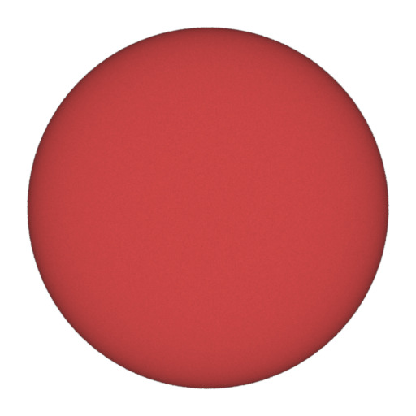
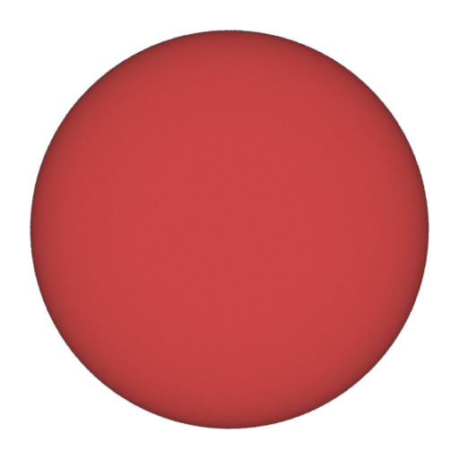
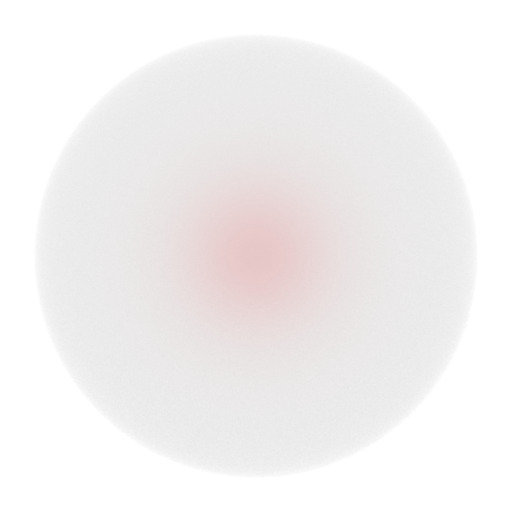
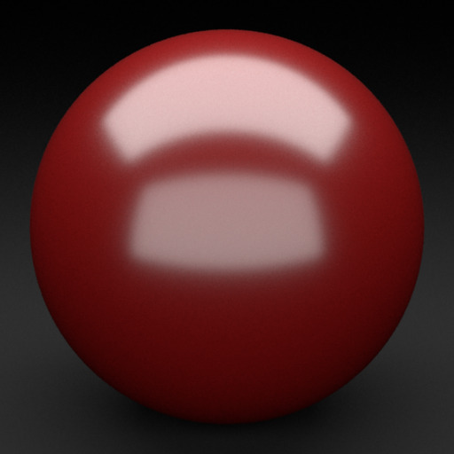
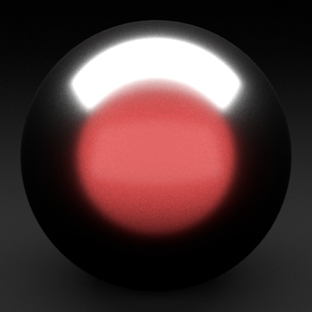
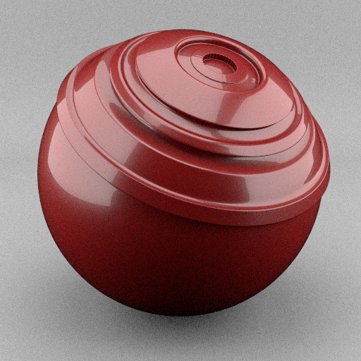

|  |
Dimension reduction (4 basis + 2 basis)
We validate the quality of the dimension reduction compared to the full table. In this test, we render a sphere with a rough coated Lambertian material lit by a white environment. We compare rendering using full dimensional tables against using our iteratively reduced tables. In this specific test, we used 2 basis for the absorption and 4 basis for the roughness. |
|
Dimension reduction (2 basis + 2 basis)
We validate the quality of the dimension reduction compared to the full table. In this test, we render a sphere with a rough coated Lambertian material lit by a white environment. We compare rendering using full dimensional tables against using our iteratively reduced tables. In this specific test, we used 2 basis for the absorption and 2 basis for the roughness. |
|  |
White Furnace $\eta > 1$
We validate that our mitsuba implementation of our rough coated Lambertian compared to a stochastic reference in a whitefurnace environment. In this setup, we vary the index of refraction when the index of the coating is superior to the index of the air, and we vary the roughness of the dieletric coating. |
|  |
White Furnace $\eta < 1$
We validate that our mitsuba implementation of our rough coated Lambertian compared to a stochastic reference in a whitefurnace environment. In this setup, we vary the index of refraction when the index of the coating is superior to the index of the air, and we vary the roughness of the dieletric coating. |
|  |
Area light $\eta > 1$
We validate that our mitsuba implementation of our rough coated Lambertian compared to a stochastic reference in a scene where a sphere is lit by two extended area lights. In this setup, we vary the index of refraction when the index of the coating is superior to the index of the air, and we vary the roughness of the dieletric coating. |
|  |
Area light $\eta < 1$
We validate that our mitsuba implementation of our rough coated Lambertian compared to a stochastic reference in a scene where a sphere is lit by two extended area lights. In this setup, we vary the index of refraction when the index of the coating is superior to the index of the air, and we vary the roughness of the dieletric coating. |
|  |
Shaderball
We validate that our mitsuba implementation of a two layers stack of a rough dieletric and our rough coated Lambertian is visualy close to the stochastic reference. Note that this configuration is equivalent to a three layer one (for example in LayerLab). In this setup we vary the index of refraction of the first dieletric layer and the roughness of the rough Lambertian coating. |